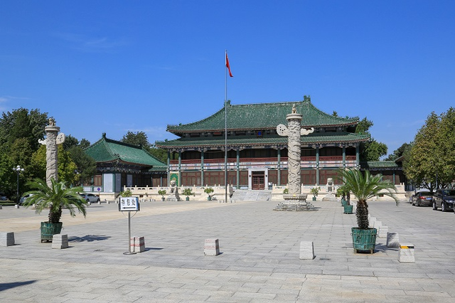
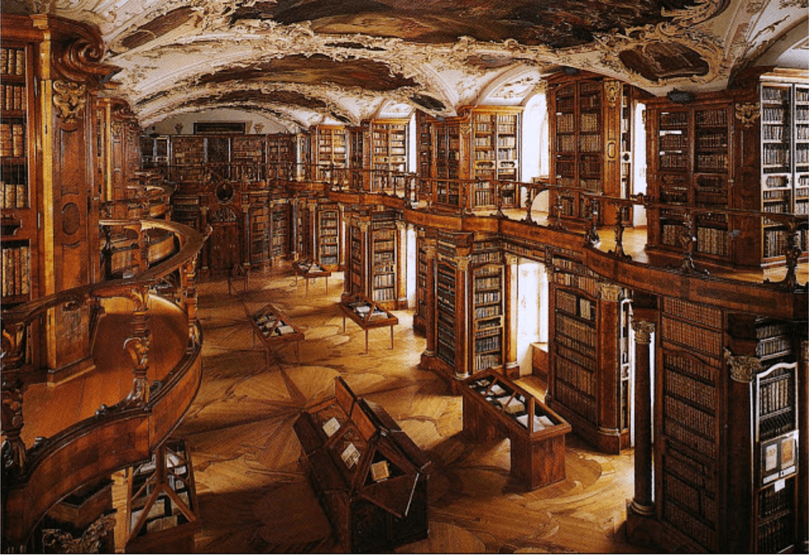
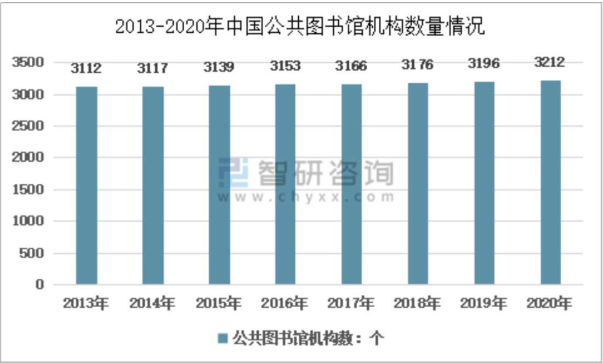

我们为什么需要一座私人图书馆？
“我心里一直都在暗暗设想，天堂应该是图书馆的模样。”
人类之所以能创造出灿烂的文明，很大程度是由于知识的积累，而图书馆在其中扮演的，则是无可替代的角色。图书馆的发展历史是怎么样的？它对我们意味着什么？在以快餐文化闻名的美国，图书馆的数量为何却能超过麦当劳汉堡店？
关于图书馆的重重谜团，今天就带大家来一探究竟。
#01.王公贵族到平民百姓图书馆的前世今生
自从人类产生文字，保存整理文字记录的图书馆应运而生，并在东西方有着相似的发展轨迹。
早在公元前3000年的苏美尔、公元前2500年的埃及、公元前2000年的中国商朝，收藏文献的图书馆机构已作为国家权力的一部分而存在。书籍中所蕴载的知识与思想被统治阶级牢牢把控和垄断，普通人无以问津，底层的劳动阶级鲜有受到教育的机会，因此阶层也逐渐固化，社会、宗教、文化和政治权力从而得以建立。
示意图 | 网源网络
中国最早的一座国家图书馆要追溯到汉成帝时期，由于皇宫内外堆满了竹简书和帛书，他下令进行分类整理。最终编成了中国最早的国家图书馆目录《七略》（今天学科分类的前身），并创立中国第一个国家图书馆，后世称长安天禄阁。
 示意图 | 网源网络
到了中世纪，随着知识的普及，图书馆也下移至教会、修道院、王公贵族，中国则在地方官府、寺庙、官宦富商家庭广泛出现，但基本上仍然属于“内部领地”，外人无权使用。 也正因此，在中世纪的欧洲，宗教神学掌控着人类的精神与知识领域，宗教教义成为解释和衡量一切的标准，使人们在一个体系范式之下固步自封。
 示意图 | 网源网络
示意图 | 网源网络而后的十七、十八世纪，启蒙运动中的欧洲思想家开始倡导向研究人员或愿意学习的人开放图书馆，把人类的目光从“形而上”的宗教神学，转向“形而下”的人类理性。而从教会分离出来的知识群体，在之后人类社会的进步与变化之中，同样起到了不可或缺的作用。
 示意图 | 网源网络
九世纪下半叶，英美两国几乎同时出现近代“公共图书馆运动”。1850年，英国议会通过世界上第一部《公共图书馆法》，1852年，世界第一个依法设立的公共图书馆在曼彻斯特市诞生，免费无差别为市民服务，成为英国工业革命中的文化先锋。
从此，公共图书馆这个顺应现代文明发展趋势的优良机构，如星星之火在全世界推广开来，成为一种保障人民文化权利，维护公平正义的社会制度。
示意图 | 网源网络
当我们回望图书馆的历史变迁，不论是东方或是西方，从王公贵族走进平民大众，不难看出它同时也代表着人类文明思想的觉醒与进步的过程。在寻求自由的道路之上，图书馆成为一个“生长着的有机体”，与人类社会共同脉动，显现出强劲的生命力。
#02.让图书馆登上云端惠及每一个求知的心灵
2019年9月，习近平总书记在给国家图书馆老专家的回信中指出：“图书馆是国家文化发展水平的重要标志，是滋养民族心灵、培育文化自信的重要场所”。
在大国文化自觉到文化自信的奋进历程中，图书馆已然是一个不可忽视的环节。然而时至今日，中国公共图书馆的数量相较起我们的人口，仍然可以用少得可怜来形容。数据显示，2020年我国共有公共图书馆3212所，平均约430000人才能拥有一所图书馆。
 示意图 | 网源网络
而根据联合国教科文组织统计，以色列在人均拥有图书和出版社的数量方面，居于世界前列，全国公共图书馆和大学图书馆有1100多所，平均不到4000人就有一所公共图书馆。
英国与美国的数据分别为10000人和13000人共同使用一座图书馆，同样要远远优于中国。公共图书资源的匮乏程度，已经成为势必要解决的国民性问题。
随着时代的发展，阅读这件事早已经不仅仅停留在纸页之上，电子书的便捷以及更大的存储空间等特点成为了当今更为贴切的阅读方式。区别于实体图书馆在空间与时间上的限制，我们在数字阅读中也看到了另一种可能——私人线上图书馆。
示意图 | 网源网络
如同顺应现代文明发展的公共图书馆，私人图书馆通过购买商品属性的电子书，让消费者得以实现像纸质书一般获得其所有权，成为自己的一份数字资产，占有、使用、处分、获益，都能随你所享。
更重要的是，不论是个人或是社会层面，通过私人藏书馆的普及，个人获取知识的便捷性得到大幅提升，在不断突破自身思维局限的同时，社会文明程度也将更为发达，持续为民族文化的传续提供强劲的动力。
到那时，不再会有身份地位的差异，人人平等，互为良师，相互分享，共促成长。阅读也将承担起更为广袤的社会职能，构建起一方方滋养心灵的宝贵绿洲，成为每一个怀揣求知之心的人随处可拾的平凡之事。
所以，与其问一句我们为什么要有一座私人图书馆？
似乎更应该问一句，为什么不呢？